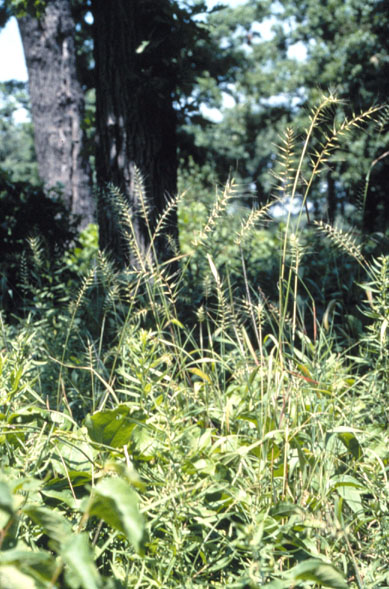
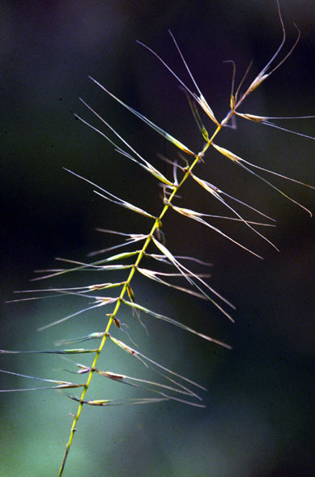
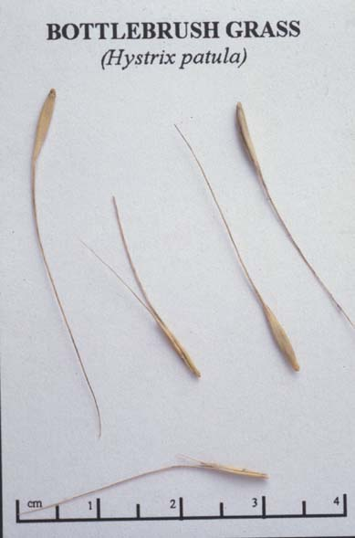

Hystrix Patula
Family: Poaceae
Bottlebrush Grass
Swink/Wilhelm # 5


Click to view larger photo
FLOWERING: Late June - July
SEED TIMING: Late August - early September
HABITAT: A common grass of open, mesic woodlands
DIAGNOSTIC FEATURES: 2.5 - 4 feet high. Leaves have soft feel. May have reddish color where leaf attaches to stem. Spike has a distinctive bottlebrush shape which persists into winter.
TO PICK: Caution: Spikelets of this grass are very brittle and may be knocked off stem even when in full bloom. Do not attempt to pick green seeds. Wait until straw colored. Also, empty cases remain on plant once seed is dispersed. Check top of stalk to be certain there is actually seed inside the case. This is a short lived perennial or biennial.